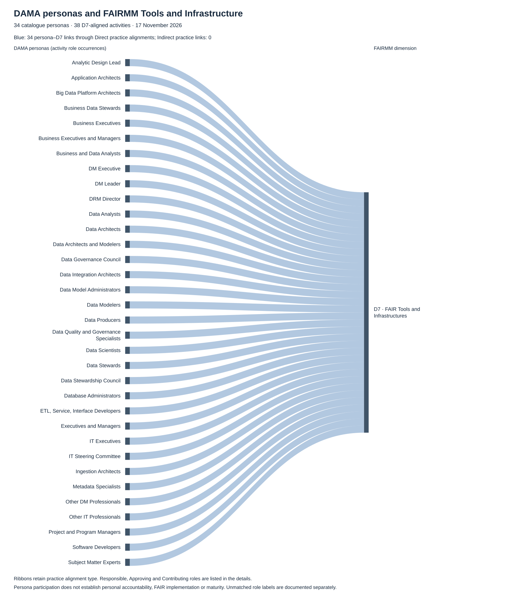

34 DAMA catalogue personas connect through 38 activities with 86 proposed D7 alignment records. All current D7 practice alignments are Direct; none are Indirect. This is a projection through source activity roles, not a Direct classification of the personas themselves.
